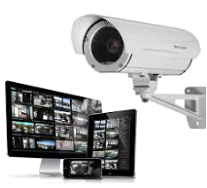
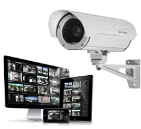

Əsas səhifə
Haqqımızda
Avadanlıqlar
Xidmətlər
Əlaqə

 

Kamera-videomüşahidə sistemləri
Video nəzarət sistemləri uzaq vizual nəzarət və video qeydini təmin edən bir proqram və aparat vasitəsidir.
Müasir video
nəzarət vasitələri, lisenziyaların avtomatik tanınması, hərəkət aşkarlanması və tərk edilmiş
əşyalar, hərəkət edən cisimləri
izləmək üçün müxtəlif funksional modullara sahibdir.
Şirkətimiz - Azsystems MMC həm də CCTV sistemlərinin təchizatı və quraşdırılması sahəsində ixtisaslaşmışdır. Biz
Azərbaycan bazarına video nəzarət sistemləri üçün aparıcı avadanlıq istehsalçılarının məhsulları ilə təmin edirik. Davam
edən layihələrin bir hissəsi olaraq, IP video nəzarət avadanlığı, analoq "ənənəvi" və yüksək dəqiqlikdə analoq
video nəzarət
(HD-CCTV) quraşdırırıq, giriş nəzarəti və siqnalizasiya sistemləri ilə inteqrasiya edirik.
Təhlükəsizlik sistemləri
AzSystems MMC -in yüksək ixtisaslı mütəxəssisləri video nəzarət
sisteminin hazırlanması və quraşdırılmasında böyük təcrübəyə malikdir
və obyektin video nəzarət sisteminin təşkili üçün bütün tələbləri nəzərdən
keçirir. CCTV kameralarının lazımlı sayını diqqətlə seçirik, mühafizə
ərazilərin daha dəqiq bir görünüşünü əldə etmək üçün "kor alanlar"-dan
qaçmaq və müşahidə zonalarının qismən örtüşməsi üçün kameraların
yerini hazırlayırıq. Effektiv təhlükəsizliyi təmin etmək üçün video nəzarət
sistemi digər təhlükəsizlik sistemləri ilə birləşdirilir.
Həm daxildə, həm də
xaricdə istifadə üçün hər hansı bir dizaynın rəqəmli və analoq, kabel və
simsiz CCTV kameralarını quraşdırmasını həyata keçiririk. Müvafiq
kameraların seçilməsi layihənin vəzifəsi və ətraf şərtlərindən asılıdır. (partlayışa davamlı kameralar, toz və nəmdən qorunan bir mənzil kamerası, anti-korroziya və
anti-vandal kameralar və s.). AzSystems MMC həm ayrı mühafizə olunan obyektlər, həm də müxtəlif obyektlər və zonalar üçün aparıcı təhlükəsizlik həllərindən
birini mövcud olan məlumat bazaları ilə məlumatları təhlil etmək və müqayisə etmək üçün ayrı-ayrı CCTV kameraları və xüsusi hazırlanmış alqoritmlərdən istifadə
edən şəxsləri avtomatik olaraq müəyyən edən bir üz tanıma sisteminin tətbiqi təklif edir.

Telekomunikasiya və informasiya texnologiyaları
Telekommunikasiya və informasiya texnologiyaları həyat tərzimizi, işimizi və ünsiyyətimizi
dəyişdirdi. Bu gün dünyanın hər yerindən məlumat əldə edə və insanlarla əlaqə qura
bilərik. Mobil texnologiyaların və internetin inkişafı ucqar ərazilərdə məskunlaşan insanlara
səhiyyə, təhsil və maliyyə kimi əsasxidmətlərdən istifadə etməyə imkan verir.
Telekommunikasiya və informasiya texnologiyaları kiçik startaplardan tutmuş böyük
korporasiyalara qədər bütün müəssisələrin uğuru üçün önəmli rol oynayır, eyni zamanda
yoxsulluq, aclıq və xəstəlik kimi qlobal problemlərlə mübarizədə strateji əhəmiyyət daşıyır.
Texnologiyanın istifadəsi təşkilatlara məlumat toplamağa, inkişafı izləməyə və bu
problemləri həll etmək üçün təsirli strategiyalar tətbiq etməyə imkan verir.
Server otaqların yığılması
Server otaqları- IT sistemi təşkil edən bütün avadanlıqların və sistemin ürəyi sayılan serverlərin təhlükəsiz, etibarlı və
fasiləsiz fəaliyyətini təmin etmək üçün istifadə olunur.
Server otağı düzgün dizayn edilməyibsə, bu zaman bu otaqda olan avadanlıqlara cavabdeh şəxsin tez-tez problemləri
olacağı mənasına gəlir. Şirkət daxilində bundan ən çox əziyyət çəkən məhz həmin cavabdeh şəxsdir.Hər kəsə də
məlumdur ki, bu cavabdeh şəxslər isə elə IT mütəxəssislərdir.
Bollard sistemlərinin quraşdırılması
AzSystems MMC şirkəti bollard sisteminin – yolda məhdudiyyət yaratmaq üçün istifadə edilən ən müasir təhlükəsizlik sisteminin satış və
montajını təklif edir. Bollard təhlükəsizlik sistemi asan və rahat istifadə qaydası ilə digər məhdududiyyət sistemlərindən seçilir. Estetik
xarici görünüş, səssiz işləməsi, kompakt və möhkəm olması bollardın üstün cəhətlərindəndir. Bollard nəqliyyatın giriş və çıxışına nəzarət
üçün ən ideal təhlükəsizlik vasitəsidir.
Nəzarət buraxılış sistemləri
Bu gün nəzarət-buraxılış məntəqələri həm iş yerlərində həm də dövlət qurumlarında
təhlükəsizlik sisteminin ayrılmaz hissəsinə çevirilib. Çünki nəzarət-buraxılış məntəqələrinin
bir çox üstünlükləri var. Kənar şəxslərin girişinə mane olmaq, giriş-çıxış vaxtlarına nəzarət,
mərkəzi idarəetmə bunlardan sadəcə bəziləridir. Turniketlər, avtomatlaşdırılmış qapılar,
kilidlər, nəzarət kameraları bu gün nəzarət-buraxılış məntəqələri kompleksinin əsas
elementləridir. Bizimlə işləməyə qərar verdikdən sonra mühəndislərimiz ehtiyyaclarınızı
dinləyəcək və bu istiqamətdə sizə tövsiyyələr verəcəklər. Daha sonra isə müştərinin
təsdiqi də alındıqdan sonra prosses başlayacaq.
Nəqliyyat vasitələrinin keçidi üçün keçid
məntəqəsinin avtomatlaşdırılması
Müəssisə ərazisində nəqliyyat vasitələrinin keçidinə nəzarət üçün keçid
məntəqələrinin avtomatlaşdırılması zəruri önəmlidir.Bu sizə təhlükəsizliyi artırmağa,
ötürmə qabiliyyətini yaxşılaşdırmağa və məlumatların avtomatik saxlanmasına
imkan verir. Şlaqbaumlar, turniketlər, bariyerlər bu gün nəqliyyat vasitələrinin keçid
məntəqələri kompleksinin əsas elementləridir. Belə ki, giriş nəzarəti rejiminin
xüsusiyyətlərini və keçidlərin, sənədlərin, daşınan malların yoxlanılması üsullarını
nəzərə alaraq sistemləri hazırlayırıq və quraşdırırıq.
Qeyd edək ki, AzSystems MMC
olaraq biz keçid-nəzarət məntəqələrinin yaradılmasında biz yalnız dünyanın öndə
gələn istehsalçılarının avadanlıqlarından istifadə edirik.Eyni zamanda komandamız
bu sahədə peşəkarlaşmış və yüksək ixtisaslı mühəndislərdən ibarətdir.Bu isə bizə,
müştərilərimizə daha yaxşı servis və texniki dəstək göstərməyə imkan verir.
Yanğına nəzarət və təhlükəsizlik sistemləri
Yaşayış və ofis binalarından əhəmiyyətli hərbi və sənaye obyektlərinə
qədər olan bütün daşınmaz əmlak obyektləri üçün yanğın təhlükəsizliyi
sistemləri tələb olunur, çünki yanğın riskləri elektrik avadanlıqlarının sayı
və elektrik enerjisi təchizatının artması ilə yüksəlir. AzSystems MMC
yanğın söndürmə sistemləri ilə həyəcan, xəbərdarlıq və evakuasiya
inteqrasiya, daşınmaz əmlakın yanğın təhlükəsizliyi təmin etmək üçün
həllərin inkişaf təklif edir. Bizim ixtisaslı mütəxəssislərimiz qabaqcıl
istehsal şirkətlərinin sertifikatlaşdırılmış avadanlıqlarından istifadə edərək,
etibarlı yanğın təhlükəsizliyi sistemini qurur.
Bütün qurulmuş təhlükəsizlik
sistemlərinin əlaqələndirilməsi operator nəzarət panelində aparılır: bildiriş və evakuasiya,
lift və eskalator idarəetmə, qapıların tənzimlənməsi, havalandırma və
kondisioner, sənaye televiziyası, yanğın siqnalı, su və qaz ilə yanğın söndürmə və tüstüdən
təmizlənmə.
Xəbərdarlıq siqnalı və məlumatlandırma
Biz qorunan ərazidə yanğının vaxtında aşkarlanması üçün bir sıra texniki vasitələrdən istifadə edərək
yanğın siqnalizasiya sistemini quraşdırır və yanğının aşkar edildiyi zaman həmçinin yanğın xəbərdarlığı
və atomatik yanğın söndürmə, tüstüdən təmizləmə və digər avadanlıqlar oduğu zaman təhlükəsizlik
nəzarət panelinə siqnalın dərhal ötürülməsini və yanğın siqnalının işə salınmasını təmin edirik. Hər bir
obyektin yanğın təhlükəsizliyi sisteminin tələblərinə uyğun olaraq fərdi mərtəbələrə və ya bütün bina üçün
səs, səs və ya işıq yandırıcı işıq ötürücülük qabiliyyətinə malik yanğın siqnalizasiya sistemi tətbiq edirik.

Notebook, kompyuter və UPS avadanlıqlarının satışı və
texniki dəstəyi
Günümüzün əvəzolunmazı sayılan kompüterlərsiz həyatımızı təsəvvür etmək artıq çox çətindir. Evdən
çıxmadan bir toxunuşla biznesimizi idarə edirik. Noutbuklar rahat daşınan, bütün hissələri kompakt halda
olan və kabelsiz işləyə bilən bir kompüter növüdür. Noutbukların təbii ki, masaüstü kompüterlərdən ən
böyük fərqi rahat daşına bilməsidir ki, çoxlarımız məhz buna görə noutbuklara üstünlük veririk. Bundan
əlavə, masaüstü kompüterlərlə müqayisədə noutbuklar daha az enerji sərf edərək enerjiyəqənaət etməyə
imkan yaradır. Kompüter avadanlıqlarının kəsintisiz işini təmin etmək üçün bizə enerji təminatı vacibdir.
Lakin bəzi texniki nasazlıq hallarında enerjinin təchizatında problemlərlə üzləşə bilirik. Bu halda isə bizə
dəstək olan cihazımızdövrəyə girir. Elektrik kəsilməsi və ya dalğalanmalar zamanı fasiləsiz enerji
təchizatını təmin edən cihaz UPS-dir. UPS, şəbəkə cihazları, serverlər, kompüter sistemləri, rabitə
avadanlıqları, tibbi cihazlar və digər elektron avadanlıqlar kimi vacib və yahəssas sistemlərin fasiləsiz işləməsini təmin edən avadanlıqdır. Müəssisələr
avadanlıqlarının fasiləsiz və problemsiz fəaliyyətini təmin etmək üçün mütləq şəkildə bu avadanlığa üz tuturlar. Bununla da ofis avadanlıqlarınızı qarantiya altına
almış olursunuz və rahatlıqla istifadə edirsiniz.
Kompüter avadanlıqlarının kəsintisiz işini təmin etmək üçün bizə enerji təminatı vacibdir. Lakin bəzi
texniki nasazlıq hallarında enerjinin təchizatında problemlərlə üzləşə bilirik. Bu halda isə bizə dəstək
olan cihazımız dövrəyə girir. Elektrik kəsilməsi və ya dalğalanmalar zamanı fasiləsiz enerji təchizatını
təmin edən cihaz UPS-dir. UPS, şəbəkə cihazları, serverlər, kompüter sistemləri, rabitə avadanlıqları,
tibbi cihazlar və digər elektron avadanlıqlar kimi vacib və ya həssas sistemlərin fasiləsiz işləməsini
təmin edən avadanlıqdır. Müəssisələr avadanlıqlarının fasiləsiz və problemsiz fəaliyyətini təmin etmək
üçün mütləq şəkildə bu avadanlığa üz tuturlar. Bununlada ofis avadanliqlarinizi qarantiya altina almış
olursunuz ve rahatlıqla istifadə edirsiniz.
Tibbi avadanlıqlar
Əvvəlcə tibbi ləvazimatların nə olduğunu izah edək. Tibbi ləvazimatlar səhiyyə müəssisələrində mövcud olan
vacib sağlamlıq məhsulları deməkdir.Tibbi ləvazimatlar sahəsində çoxlu müxtəlif məhsullar var və hər bir
məhsulun təyinatı fərqlidir.Ona görə də hər bir səhiyyə müəssisəsində tibbi ləvazimatlar olmalıdır. Bu
məhsulların hər biri səhiyyə müəssisələrində, xəstəxanalarda, poliklinikalarda, sağlamlıq ocaqlarında, dializ
mərkəzlərində və bu kimi yerlərdə tibbi ləvazimat olması şərtdir. Əgər bu məhsullardan hər hansı bir
çatışmazlıqlarınız varsa, dərhal şirkətimizlə əlaqə saxlayıb ofisinizi tamamlaya bilərsiniz.
Kondisionerlər
Kondisionerlər məişətin ən vacib texnikalarından biridir. Kondisioner modellərini seçərkən ən vacib məqamlardan biri, enerji
sinfinin, soyudulma və isitmə funksiyasının nəzərə alınmasıdır. İstəklərinizə uyğun kondisioner seçmək üçün onun növləri və
xüsusiyyətəri ilə ətraflı tanış olmanız tövsiyə olunur. Bu sahədə şirkətimiz tərəfindən hər zaman sizə yardım etməyə tam
hazırıq.